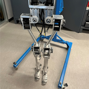
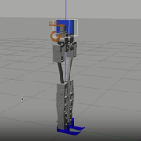

Research
Our current research and projects with HERO
-
Ongoing Research
-
Developing a full-body human-like robot
 We have been continuously developing a humanoid robot that resembles human anatomy, is cost-effective, and can serve as a solid platform for applying advanced control algorithms.
Currently, we are designing the 3rd version of the ankle joint with the core being the four-bar mechanism and the use of harmonic drives. The goal of this version is to closer match the human leg shape and reduce the cost of materials.
See more...Standing push recovery
The standing push recovery problem occurs when a robot in standing position needs to resist external disturbance without falling down. We propose a new controller based on momentum concepts and a new reaching law for sliding mode control that can help the robot withstand higher forces while standing.
See more...
-
Future Goals
- Stepping push recovery: A standing humanoid robot can only withstand a range of external disturbance such that two feet stay flat on the ground. If forces are outside this range, the robot can no longer stand stably. Similar to how human react to forces, the robot needs to take a step to be balanced. This problem is called the stepping push recovery.
- Walking on uneven terrain/complex environment: Uneven terrain poses a great challenge for humanoid robots to walk through stably. However, as flat and clean terrain is rare in the real world, humanoid robots need to overcome this problem to be practical.